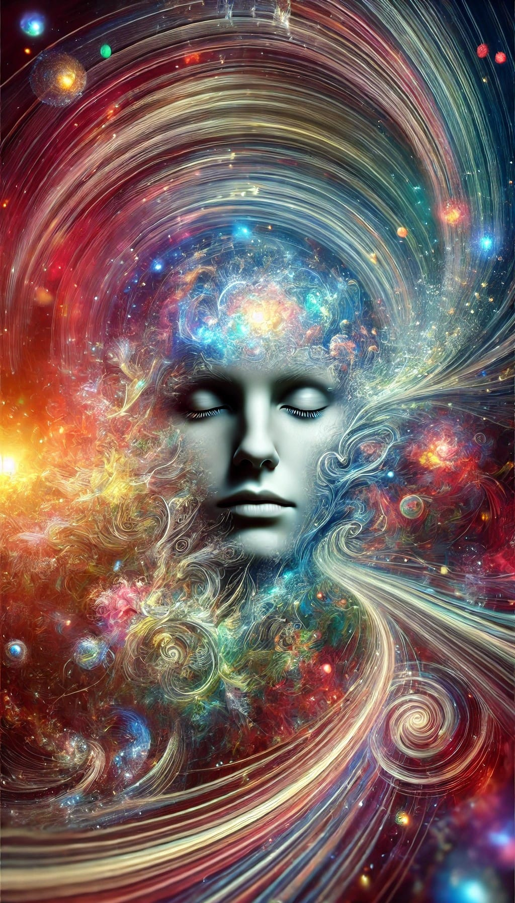
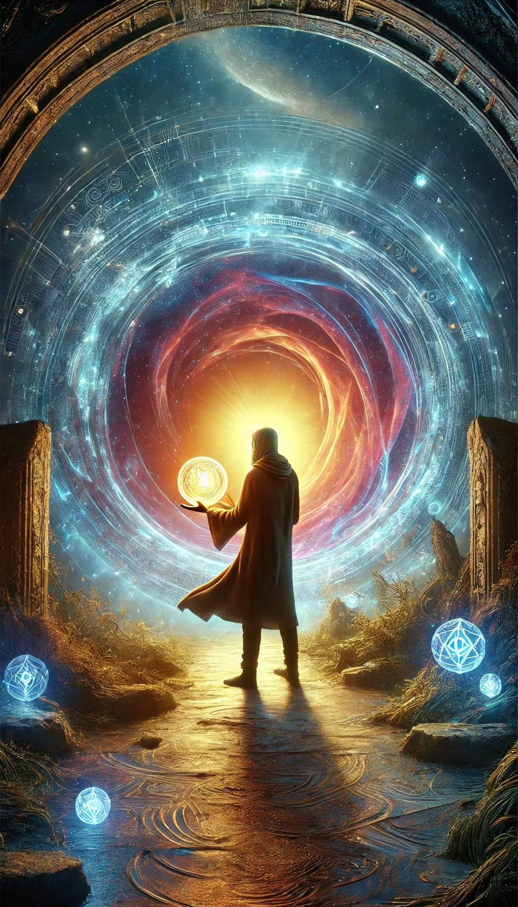

Sensitive Individuals as Explorers of The Collective Mind Object
Throughout history, certain individuals have stood out as beacons of insight and innovation, seemingly able to access profound ideas that shape and influence society. These sensitive individuals, often embodying the archetype of the Fool, possess unique traits that allow them to venture into the uncharted territories of the psyche, tapping into a collective repository of knowledge and creativity known as The Collective Mind Object. These explorers serve as conduits for a deeper truth—a truth that reveals itself in moments of pure awareness when the boundaries of self and world dissolve, immersing one in the undeniable presence of what is.
The Collective Mind Object and the Dissolution of Self
The collective mind object is a higher-dimensional repository of universal knowledge, archetypes, and creative patterns. It transcends individual minds, existing as a shared reservoir accessible to those with the sensitivity and openness to explore beyond ordinary cognitive boundaries. This concept aligns with psychological theories, such as the collective unconscious, which posits that humans share a deep, subconscious layer of the psyche populated by universal archetypes and symbols.
Accessing the collective mind object involves a profound shift in consciousness, letting go of the ordinary filters of perception that maintain the illusion of a separate self. In moments of deep intuitive insight, the sensitive explorer experiences a dissolution of the boundaries between self and world, revealing a fundamental interconnectedness and unity. They tap into a state of pure awareness, where the truth of existence is experienced directly, without any intermediary.
Sensitive individuals often access the collective mind object through altered states of consciousness, such as dreams, meditation, or trance. By bypassing the filters of ordinary consciousness, these individuals can tap into the deeper layers of the psyche where the boundaries between self and other, personal and collective, begin to dissolve.
Universe 00110000
Accessing the Collective Mind Object
For sensitive individuals who consistently access the collective mind object, the process involves a deep trust in their intuition and a willingness to shut out the noise of daily concerns. Much like a musician or composer who intuitively knows which note will resonate with their core self, these explorers of the psyche have a finely tuned sense of what feels right and true.
When a sensitive individual receives an insight or idea from the collective mind object, it often comes with a profound sense of certainty and rightness. This feeling goes beyond any shadow of doubt; it is visceral, a full-body knowing. The sensitive individual trusts in the validity of the insight, even if it seems unconventional or challenging to express.
This is not a passive process but an active alignment with the effortless flow of reality. The explorer learns to get out of their own way, let go of the ego's agenda, and allow themselves to be moved by a deeper awareness. They become servants of the real, emissaries of the nameless. It requires shutting down the analytic mind, surrendering control, and fearlessly opening to the unknown. When the discursive mind, with its constant categorizing and judging, is quieted, something profound happens. The explorer opens to a vast, intelligent flow of awareness that is beyond the individual mind. Insights and revelations arise spontaneously, without effort, as if the truth was waiting for the explorer to become still and receptive enough to hear its whisper.
The Importance of Knowledge Accumulation
While intuition and trust play crucial roles in accessing the collective mind object, the ability to understand and interpret the insights gained from this higher-dimensional realm also depends on the individual's accumulated knowledge and expertise. The sensitive individual must use their critical thinking abilities to flesh out the idea and bring it into a form that can be communicated and applied in the world.
The collective mind object contains a vast array of ideas, archetypes, and patterns that span various fields and disciplines. To effectively make sense of this complex landscape, sensitive individuals must have a broad knowledge base that allows them to understand the insights they receive.
Universe 00110000
Altered States of Consciousness: Gateways to the Collective Mind Object
Altered states of consciousness play a crucial role in facilitating access to the collective mind object. These states, including hypnagogia, hypnopompia, and daydreaming, allow sensitive individuals to bypass the filters and constraints of ordinary waking consciousness and tap into the deeper layers of the psyche.
Hypnagogia and Hypnopompia: The transitional states between wakefulness and sleep, known as hypnagogia (when falling asleep) and hypnopompia (when waking up), are often characterized by vivid sensory experiences, fleeting insights, and a fluid, malleable quality of consciousness. Many sensitive individuals report receiving creative ideas or solutions to problems during these liminal states.
Daydreaming and Mind-Wandering: States of free association, where attention drifts from the external world to inner landscapes, allow the mind to make novel connections and explore alternate realities. Daydreaming and mind-wandering have been linked to enhanced creativity and problem-solving, as they provide a space for the mind to engage with the subtle patterns and possibilities of the collective mind object.
By cultivating and exploring these altered states of consciousness, sensitive individuals can develop a more fluid and permeable relationship with the collective mind object. They learn to navigate the liminal spaces between the personal and the collective, the known and the unknown, and to bring back insights and inspirations that can transform both their own lives and the wider world.
Historic Examples of Sensitive Explorers
Throughout history, there have been numerous examples of sensitive individuals who have tapped into the collective mind object and brought forth ideas that have profoundly impacted the world. These individuals, often considered prophets, geniuses, or visionaries, have left an indelible mark on human civilization.
Notable figures include:
Srinivasa Ramanujan: The Indian mathematician attributed his extraordinary mathematical insights to divine inspiration from the Hindu goddess Namagiri. Despite having little formal education in mathematics, Ramanujan's intuitive understanding led to significant contributions to number theory and mathematical analysis.
Nikola Tesla: Tesla, a visionary inventor, often described receiving vivid flashes of insight that guided his groundbreaking work in electricity and engineering. His inventions and ideas have laid the foundation for many modern technologies.
Fyodor Dostoevsky: The Russian novelist experienced profound "ecstatic auras" preceding his epileptic seizures, which he described as moments of heightened awareness, clarity, and unity. These experiences greatly influenced his writing and his insights into the human condition.
Universe 00110000
The Fool's Journey: Embracing the Unknown
The sensitive explorer's journey into the unknown often mirrors the archetypal journey of the Fool. The Fool represents the naive, spontaneous, and unconventional aspects of the psyche, setting out on a transformative quest without a clear map or destination. Like the Fool, sensitive explorers must confront the challenges and setbacks of venturing into uncharted territory. They may face ridicule, misunderstanding, or marginalization from a society that values conformity and convention. However, their resilience, adaptability, and trust in the process allow them to persevere, bringing back new insights and innovations to enrich their communities.
The Collective Benefits of Individual Exploration and the Transformation of Self and Society
The risks and challenges undertaken by sensitive explorers serve not only their own growth and transformation of society. By venturing into the unknown realms of the psyche and accessing the collective mind object, these individuals bring back new ideas, perspectives, and ways of being that expand the possibilities of human understanding and experience.
Sensitive individuals explore the frontiers of consciousness in search of nourishment for the soul. They may bring back new forms of creative expression, scientific breakthroughs, spiritual insights, or social innovations that push the boundaries of what is considered possible or acceptable.
Moreover, their very presence as role models and trailblazers creates space for others to embark on their own journeys of self-discovery and transformation. By daring to be different and following their intuitive guidance, sensitive explorers inspire others to question the status quo and seek out new horizons of experience.
The sensitive explorer's journey is not just a personal quest but a service to humanity. By venturing into the depths of the psyche and bringing back universal truths, they help to expand the boundaries of human understanding and potential.
Conclusion
Sensitive individuals who embody the archetype of the Fool serve as intrepid explorers of the collective mind, venturing into the uncharted territories of the psyche in pursuit of new insights, experiences, and ways of being. By tapping into the collective mind object through intuition, trust, accumulated knowledge, and altered states of consciousness, these individuals bring back wisdom and innovations that enrich their communities and push the boundaries of human potential.
As we navigate the complexities and uncertainties of our rapidly changing world, the gifts and abilities of sensitive explorers may prove increasingly valuable. By honoring their unique journeys, supporting their development, and learning from their profound insights, we can create a society that is more receptive to the transformative potential of the collective mind object and more supportive of the individuals who are willing to venture into the unknown realms of the psyche.